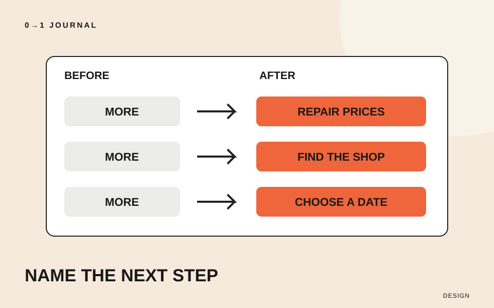

料金の下にも、場所の下にも、予約の下にも「詳しくはこちら」。画面を作っている本人は行き先を知っていますが、初めて読む人は押す前に区別できるでしょうか。今回は、リンクに表示する言葉を見直します。
題材は架空の自転車修理店「みち工房」の案内です。色や形の変更、予約機能の実装は扱いません。行き先を調べてから文言を作り、移動前の予想と移動後の内容を合わせる練習です。
まず三つの「こちら」の行き先を開く
言葉を考える前に、それぞれのリンク先を確認します。この模擬サイトでは、一つ目が修理ごとの料金表、二つ目が店舗への地図、三つ目が予約前に日時を選ぶ画面だとします。
メモには「現在の文言／移動先でできること」を対にして書きます。「予約ページ」のようなページ名だけでは、日付を選ぶのか、申し込みを確定するのかが分かりません。実際にどの段階へ進むかまで調べてください。
まだリンク先がない設計段階なら、画面の設計図で確認し、「移動先は未実装」と残します。存在しない機能を、文言だけで約束しないためです。
行き先の名前と行動を組み合わせる
三つの候補は「修理料金を確認する」「店舗への行き方を見る」「予約日時を選ぶ」とします。「何を」に当たる言葉を足すと、それぞれの違いを表せます。短さだけを優先して、全部を「確認する」にそろえる必要はありません。
W3Cのリンクの目的に関する解説では、リンクの文言単独、またはプログラムで判断できる文脈と合わせて、目的を特定できることを扱っています。「こちら」という言葉が常に禁止されるわけではありません。今回は文言だけでも選びやすくする方針です。
たとえば「料金表はこちら」と同じ文の中で説明できている場合と、離れた見出しだけを頼りに「こちら」を置く場合を、同じ状態とは考えないでください。見た目で近いことだけに頼らず、リンク自身へ必要な名前を含める案から試しましょう。
「予約する」が何を約束するか確かめる
日時選択へ進むリンクを「予約を確定する」とすると、移動先でまだ入力が必要なのに、確定操作のように読めます。逆に、申し込みを送る操作を「次へ」だけで示すと、何が起きるかを言い表せません。
今回の入口は日時選択なので「予約日時を選ぶ」を採用します。店の受付方法が電話だけなら、この文言は使えません。実際の案内に合わせて「電話予約の方法を見る」などへ変えます。文言を変えるたびに、行き先の内容も照合しましょう。
ここで扱うのは表示する言葉です。実装時に使う要素は動作から選びます。リンクとボタンの役割を分ける記事では、ページを移動する場合と、その場で操作する場合の違いを説明しています。
長い説明は周囲に置き、選ぶための言葉を残す
「修理内容ごとのおおよその金額と詳しい注意事項を確認する」では、入口の文言が長くなります。今回ならリンクは「修理料金を確認する」とし、金額の注意事項は周囲の説明文へ置く案を考えます。
ただし、重要な条件を削ってよいという意味ではありません。リンクだけを紙に書き出して、三つの行き先を区別できるか確かめ、次に説明文と一緒に読みます。単独での点検と文脈を含む点検を両方行うと、必要な情報をどこへ置いたか確認できます。
実装後は狭い画面でも文言を末尾まで読めるかを見ます。長いからと途中を切る前に、折り返しや周囲の配置を見直してください。
15分を目安に、三つのリンクを読み比べる
手元のページから曖昧な文言を三つ選び、行き先、文言の案、実際に開いた結果を一行ずつ記録します。第三者に試してもらえるなら、開く前に「何が見られると思うか」を聞き、予想と結果が違った箇所だけ再検討します。
自分だけで点検した場合は、初めて読む人にも伝わったとは記録せず、文言と行き先を照合したと残しましょう。文言と配置を一緒に考える練習には、UIデザインの無料レッスンを利用できます。
記載内容へのご質問や訂正のご連絡は、hello@junkbranding.comまでお願いします。